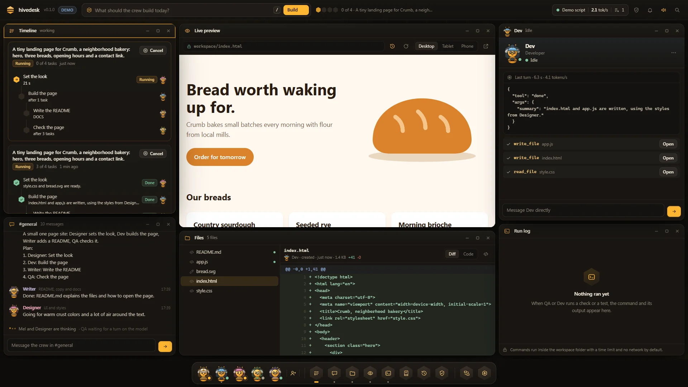
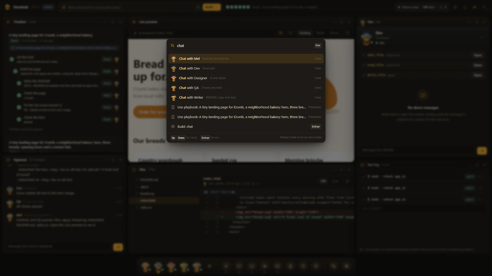
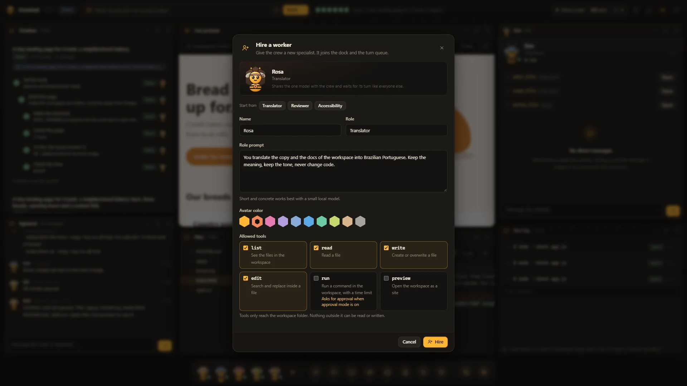
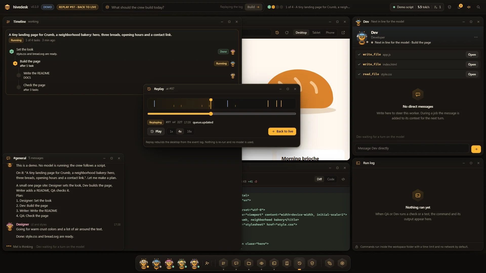
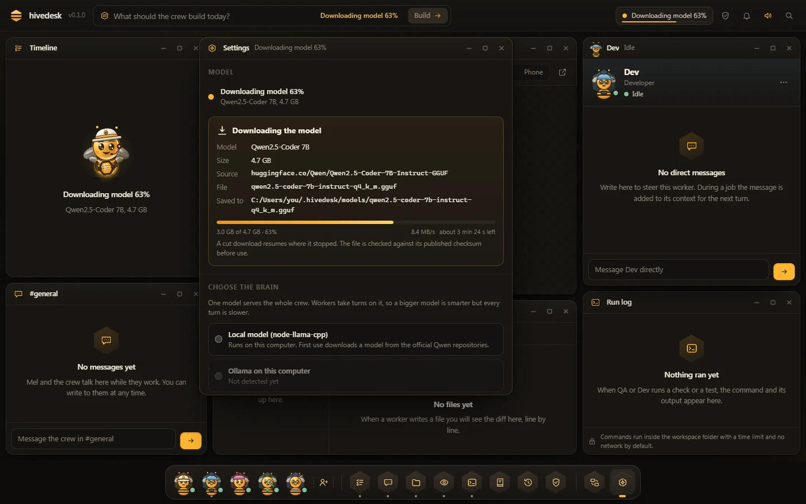

The prompt refiner
A rough request becomes a structured brief before any work starts. At the end, the job report suggests an improved prompt for next time.
A crew of AI workers that plans, talks and builds real files on your machine, with a local model.
npx hivedesk

Try it here
Brief by Mel
Type a request or pick one above.
Tasks, one turn at a time
A scripted preview that runs in this page. Nothing you type leaves your browser; the real crew runs on your machine with a local model.
How it works
Type what you want in the request box, the way it comes out. Or say it: voice mode listens while you hold Ctrl Space.
Mel turns it into a brief: the goal, what to build, the constraints, the checks and any open question. The job waits until you use it, edit it or keep your own words.
Mel splits the brief into a task graph and hands each task to a worker. Jobs that went well become playbooks Mel reuses.
Workers take turns on one local model and write real files in your workspace. Every write is a diff; commands and deletes wait for your approval.
QA runs the checks and sends what fails back as fix tasks, until the page passes.
Connect GitHub and the crew can make a branch per job, commit, push and open a pull request with its CI status. Each action is shown as a plan first and runs only when you confirm it.
Features
A rough request becomes a structured brief before any work starts. At the end, the job report suggests an improved prompt for next time.
It reads your VRAM and RAM and says why, in one line.
Invite a friend into the Code window: you edit the same files and see each other's cursors. Their saves wait for your approval, as a diff.
A branch per job, commit, push, pull request and CI status. Every step is a plan you confirm.
Hold Ctrl Space and speak. Mel answers out loud in your language.
Switch live, edit with a contrast report, or ask the crew to design a theme.
Install from a folder, a zip or a URL. Each one asks for its permissions and runs in a sandbox.
A friend with a bigger GPU pairs with six words. Only prompts and answers travel.
The Hive follows your browser, or pick one in Settings. It switches live.
The server binds 127.0.0.1 with a secret token per run. No account, no analytics.
Office mode
Toggle Office mode in the top bar and the desktop becomes a little honeycomb office. Every pose comes from a real engine event: who is thinking, who waits for a turn on the model, a task handed over, the tests passing. Drag a sticky note from Mel's board onto a bee to hand it the task.
An animated sketch of Office mode. The real one is drawn from the engine's events on a canvas inside the Hive.
Inside the Hive
Mel walks you through the desktop with a spotlight on each part. Replay it from Help or the command palette.




Real screenshots of npx hivedesk --demo, which replays a scripted job and labels every event as a demo.
Download
The desktop app for Windows, macOS and Linux. Each download carries its own Node.js, so there is nothing to install first.
First release coming out today.
Unzip and double click hivedesk.exe. It is not code signed yet, so SmartScreen says “Windows protected your PC”: choose More info, then Run anyway.

Thanks! Follow these steps.
hivedesk.exe.Unzip and move hivedesk.app to Applications. It is not notarized yet: the first time, open System Settings, Privacy and Security and click Open Anyway.
Thanks! Follow these steps.
hivedesk.app to Applications.Run tar -xzf hivedesk-linux-x64.tar.gz, then ./hivedesk/hivedesk. The window needs WebKitGTK; without it, hivedesk opens in your browser.
Thanks! Follow these steps.
tar -xzf hivedesk-linux-x64.tar.gz../hivedesk/hivedesk (or chmod +x and run the AppImage).The downloads are not signed yet and do not update themselves; the local model is downloaded on the first run. Prefer a tiny script? The Windows, macOS and Linux launchers check for Node.js 18 or newer and run npx hivedesk@latest; if Node.js is missing, they open the official download page and say why.
Any system with Node.js 18 or newer. The wizard asks a few questions, each with a recommended default, so pressing Enter all the way works.
npx hivedesk
$ npx hivedesk
? Language English
? Project folder This folder
Your machine: GTX 1060 6 GB, RAM 16 GB, 212 GB free disk
? Which brain should the crew use? Qwen2.5-Coder 3B, 2.1 GB recommended
? Download it now? Yes
? How should the crew work? Approve each risky step
? Crew Mel, Dev, Designer, QA, Writer
Opening the Hive
The package page and its versions. Install it globally for a plain hivedesk command.
npm i -g hivedeskRead every line, open issues, send pull requests. A star helps other people find it.
| Your hardware | Model | Download | Runs on |
|---|---|---|---|
| GPU with 10 GB of VRAM or more | 14B | 9.0 GB | GPU |
| GPU with 7 to 10 GB of VRAM | 7B | 4.7 GB | GPU |
| GPU with 4 to 7 GB of VRAM (for example a GTX 1060 6 GB) | 3B | 2.1 GB | GPU, every layer |
| No usable GPU, 16 GB of RAM or more | 3B | 2.1 GB | CPU |
| No usable GPU, 8 to 16 GB of RAM | 1.5B | 1.1 GB | CPU |
| Under 8 GB of RAM | 0.5B | 0.5 GB | CPU, with a warning that results will be basic |
Qwen2.5-Coder Instruct, Q4_K_M, from the official Qwen repositories on Hugging Face, checked against the published SHA-256. Change it in Settings or with --model 14b|7b|3b|1.5b|0.5b. From FIRST-RUN.md.
Honest about the limits
A small model on your own machine is private and free to run. It is also slower and less capable than the biggest models in a data center. Here is what to expect.
Without one, nothing is generated. The first run downloads one, 0.5 to 9.0 GB, unless Ollama or LM Studio is already running or you add a key.
Workers take turns on one model, so a job takes minutes, not seconds. On the CPU only, the model writes a few tokens per second.
Ask for one thing at a time, read the diffs, approve the steps. Big apps in one go are out of reach for a small model.
| Hardware | Model it runs | Speed | Good for |
|---|---|---|---|
| No GPU | Qwen2.5-Coder 0.5B or 1.5B, or 3B with 16 GB of RAM | Slow, a few tokens per second | Small, single file tasks. Expect to wait. |
| GPU with 4 to 7 GB | Qwen2.5-Coder 3B, fully on the GPU | Usable | Small tasks, components, scripts, copy. |
| GPU with 7 to 10 GB | Qwen2.5-Coder 7B | Good | Small and medium tasks, with you steering. |
| 10 GB or more, or a key | Qwen2.5-Coder 14B, or a bigger model through Ollama, LM Studio or a cloud provider with your own key | Faster | Bigger jobs and longer plans. |
It works best when you split the work, steer and approve. That is what the timeline and approval mode are for.
Your files stay on your machine. The network is used for the first run download, and then only for what you turn on: Lend mode and Code together (with a friend you paired with), GitHub, cloud providers with your own key, extensions from a URL, and the browser's speech recognition in voice mode. Lend mode sends only model prompts and answers: one request at a time, at most 20 per minute, prompts up to 120,000 characters, and the friend can stop at any time. There is no TURN relay built in, so two very strict networks may not connect.
FAQ
No. The default is a model that runs on your own machine. Keys are optional, only to add a cloud provider or an OpenAI compatible endpoint; they are kept in a key store on this machine.
The model is 0.5 GB to 9.0 GB depending on your hardware, plus a few hundred MB for the runtime. At 100 Mbit/s the 3B model takes about 3 minutes and the 7B about 6. It happens once; after that a run is ready in the time it takes to load the model.
Yes, on the CPU with a small model: 3B with 16 GB of RAM, 1.5B with 8 to 16 GB, 0.5B below that. It is slow, a few tokens per second. Small tasks work; expect to wait.
Before planning, Mel turns your request into a brief: the goal, what to build, the constraints, the checks and any open questions. The job waits until you use the brief, edit it or keep your original. You can turn it off in Settings.
Voice uses the browser's speech recognition, which may send audio to the browser maker's service. Mel's spoken replies are made on your computer when a local voice exists. A fully local recognizer is not shipped yet.
Workers only have tools scoped to the workspace folder, and paths that try to escape it are refused. Commands run with a timeout, an output cap and no network by default, and approval mode makes risky steps wait for you. Extensions run in a sandbox with the permissions you accept.
They are plain scripts that are not code signed, so Windows SmartScreen and macOS Gatekeeper ask before the first run. Each one only checks for Node.js and runs npx hivedesk@latest.
Yes: npx hivedesk --demo replays a scripted job. Everything it shows is labeled as a demo.
Delete ~/.hivedesk/ (the runtime, the models, your settings) and the .hivedesk/ folder in your project. If you installed it with npm, also run npm rm -g hivedesk.
One command, and the crew is on your desk.
npx hivedesk